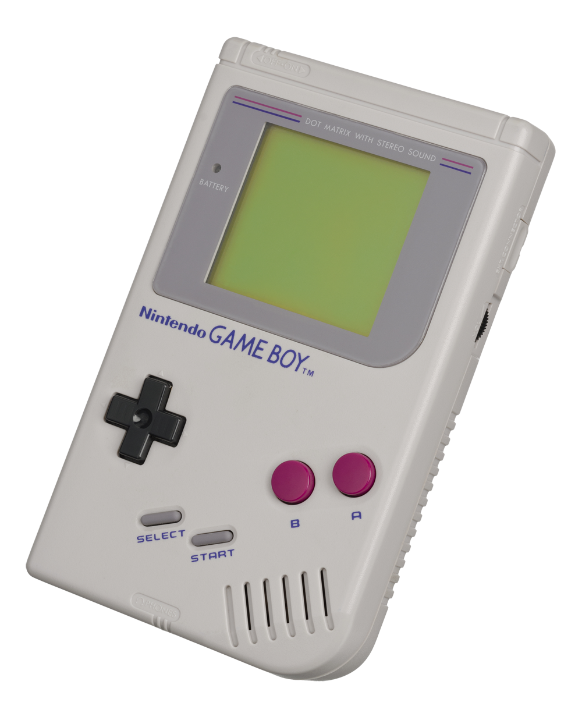

¿Qué son los Videojuegos de Pokémon?
¿Qué son los Videojuegos de Pokémon?
Los
videojuegos de Pokémon constituyen la parte fundamental de la
franquicia Pokémon y comprenden todos los videojuegos lanzados al
mercado desde sus inicios en 1996. Pokémon nació originalmente con la
distribución de Pokémon Verde y Pokémon Rojo en Japón, el primer
videojuego de la franquicia. A partir de los videojuegos surgieron las
otras grandes ramas de Pokémon: anime, manga y Juego de Cartas
Coleccionables Pokémon. Todavía hoy, son los videojuegos los que marcan
la pauta dominante, de manera que las anteriores derivan su contenido
de los videojuegos.
La clasificación de videojuegos de Pokémon más importante es aquella
que distingue entre videojuegos principales y spin-offs o videojuegos
secundarios. Pertenecen a la primera categoría los videojuegos en los
que el jugador es un entrenador Pokémon, que se embarca en una aventura
Pokémon que consiste en reunir una serie de medallas con el objetivo
último de participar en la Liga Pokémon y atrapar a todos los Pokémon.
Se consideran "principales" porque siguen el modelo establecido en
Pokémon Verde y Pokémon Rojo, son los más abundantes y variados en
contenido, y son los que inauguran cada nueva generación de la
franquicia. Estos videojuegos son la esencia de Pokémon y también los
más vendidos.
En una tercera categoría se
encontrarían las aplicaciones o apps lanzadas en los últimos años
aprovechando los avances en conectividad y funcionalidad de las
consolas de Nintendo. No son "juegos" propiamente, sino más bien
expansiones, que añaden alguna posibilidad a un juego mayor, sin
ofrecer por sí solas ninguna experiencia.
 Generaciones
Generaciones| Generación |
Consola |
|
| 1° Red/Blue/Yellow |
Game Boy |
|
| 2° Gold/Silver |
Game Boy Color |
|
| 3° Ruby/Sapphire/Emerald |
Game Boy Advance |
|
| 4° Diamond/Pearl/Platinum |
Nintendo DS |
|
| 5° Black/White/Black2/White2 |
Nintendo DS |
|
| 6° X/Y |
Nintendo 3DS |
|
| 7° Sun/Moon/UltraSun/UltraMoon |
Nintendo 3DS |
|
| 8° Sword/Shield |
Switch |
Otros medios en los que ha incursionado la franquicia
Hipervinculos